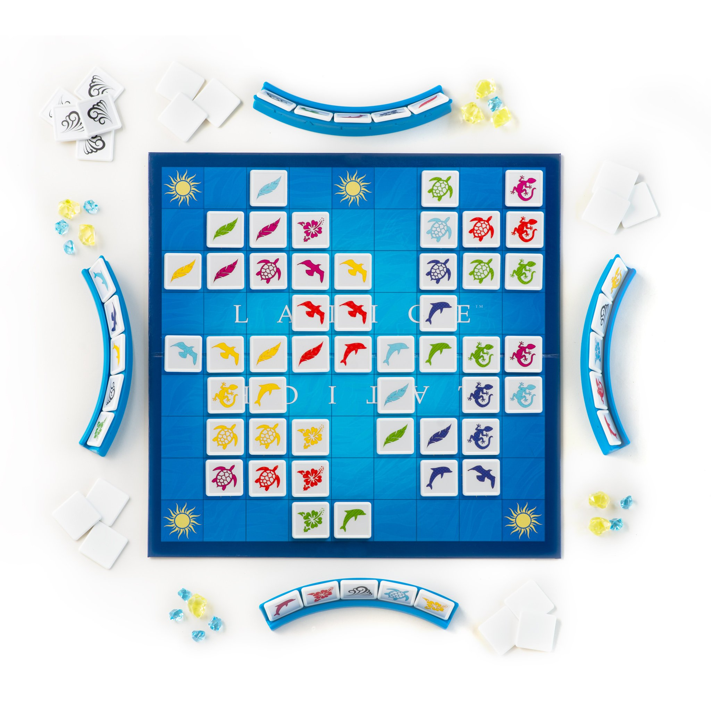

Aperçu du projet
Latice est un jeu de plateau stratégique développé en Java avec JavaFX. Chaque joueur dispose d'un ensemble de tuiles qu'il doit placer sur le plateau en les associant par couleur ou symbole aux tuiles déjà posées. L'objectif est de se débarrasser de toutes ses tuiles en premier, en faisant preuve de stratégie et d'anticipation.
Le jeu intègre un système de bonus qui vient enrichir l'expérience de jeu. Ces bonus permettent d'enchaîner des coups spectaculaires ou de bloquer les adversaires dans leur progression. La partie devient alors un véritable défi tactique où chaque décision compte.
Fonctionnalités principales
- Interface graphique développée avec JavaFX pour une expérience utilisateur fluide et moderne
- Système de placement de tuiles avec validation automatique des règles du jeu
- Gestion des tours de jeu et détection automatique de la victoire
- Système de bonus stratégiques pour dynamiser les parties
- Mode multijoueur local permettant de jouer à plusieurs sur le même ordinateur
- Animations et effets visuels pour améliorer l'immersion
Technologies utilisées
Ce projet a été entièrement développé en Java, en utilisant le framework JavaFX pour créer l'interface graphique. JavaFX offre un ensemble d'outils puissants pour créer des applications modernes avec des animations, des transitions et des effets visuels avancés.
L'architecture du code suit les principes de la programmation orientée objet, avec une séparation claire entre la logique métier et l'interface utilisateur. Cette approche facilite la maintenance et l'évolution du code.
Compétence BUT démontrée
Latice — Jeu de plateau en Java / JavaFX
Niveau estimé : 4 — AutonomieDescription : Le projet Latice a été développé en équipe dans le cadre d'un projet académique. L'objectif était de recréer numériquement le jeu de société Latice (placement de tuiles par couleur et symbole, système de bonus, détection de victoire) avec une interface graphique en JavaFX. Au-delà du développement technique, ce projet nous a imposé une vraie organisation collective : répartition des tâches, gestion du code partagé sur GitHub, coordination pour éviter les conflits et maintenir une cohérence dans l'architecture.
Mon rôle : Au sein de l'équipe, j'ai pris en charge le développement de l'interface graphique JavaFX avec Anton Hladyshev et une partie de la logique de victoire et de récompense. Nous avons défini ensemble les rôles dès le départ : qui gère le modèle, qui gère la vue, qui fait le lien (pattern MVC). Nous avons utilisé GitHub avec une stratégie de branches pour travailler en parallèle sans se bloquer mutuellement, et nous avons tenu des points réguliers pour synchroniser l'avancement et résoudre les conflits de code ou de compréhension des règles.
Analyse réflexive
La difficulté majeure de ce projet s'est avérée être humaine plutôt que technique. S'assurer que chaque membre de l'équipe partageait la même vision de l'architecture était un défi constant. Un malentendu sur l'interface entre le Modèle et la Vue a d'ailleurs failli compromettre l'avancement du projet à mi-parcours. Cette expérience m'a appris l'importance cruciale de documenter les interfaces dès le début, au lieu de s'appuyer sur des suppositions. Sur le plan des soft skills, ce projet a renforcé mon esprit d'équipe et mon écoute active : j'ai appris à privilégier l'intérêt collectif sur les préférences individuelles. Enfin, cela a développé ma fiabilité et mon sens des responsabilités : dans un flux de travail partagé, le respect des délais est indispensable pour ne pas paralyser l'ensemble de la chaîne de production.
Défis rencontrés
Le principal défi de ce projet résidait dans l'implémentation de la logique de validation des coups. Il fallait vérifier en temps réel si une tuile pouvait être placée à un emplacement donné, en tenant compte des règles complexes du jeu concernant les couleurs et les symboles.
Un autre aspect important était la gestion de l'interface graphique avec JavaFX. Il a fallu créer une représentation visuelle du plateau qui soit à la fois claire et esthétique, tout en restant performante même avec un grand nombre de tuiles affichées simultanément.
Apprentissages
Ce projet m'a permis d'approfondir mes compétences en développement Java et en conception d'interfaces graphiques avec JavaFX. J'ai notamment acquis une meilleure compréhension des patterns de conception orientés objet et de l'architecture MVC (Modèle-Vue-Contrôleur).
La gestion des événements utilisateur, l'optimisation des performances graphiques et la création d'une expérience utilisateur fluide ont été des aspects particulièrement enrichissants de ce développement.